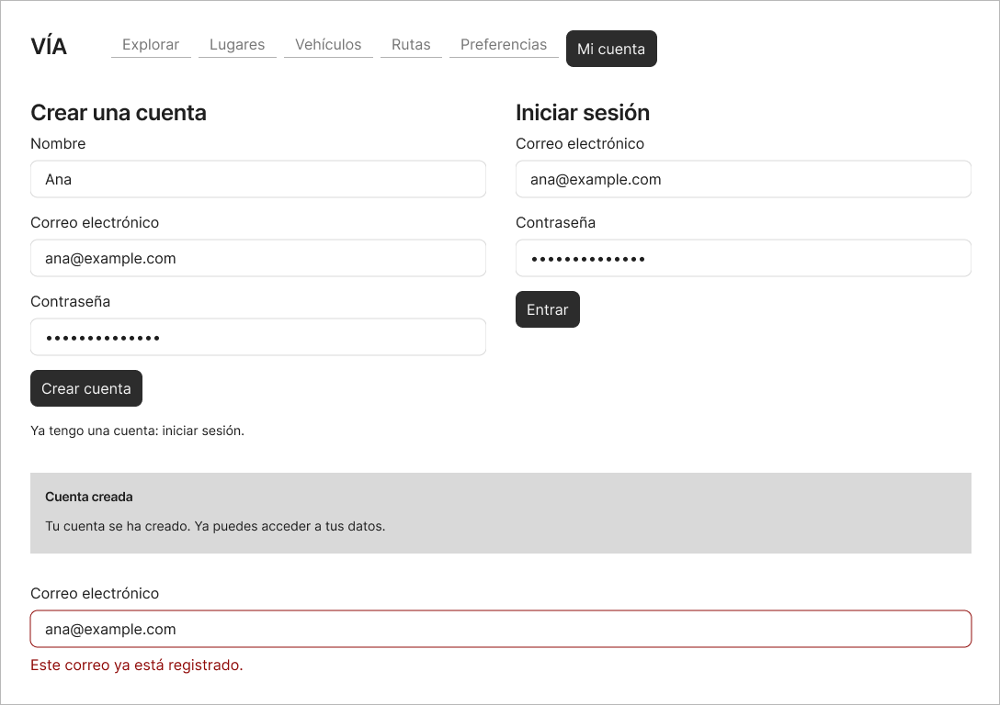
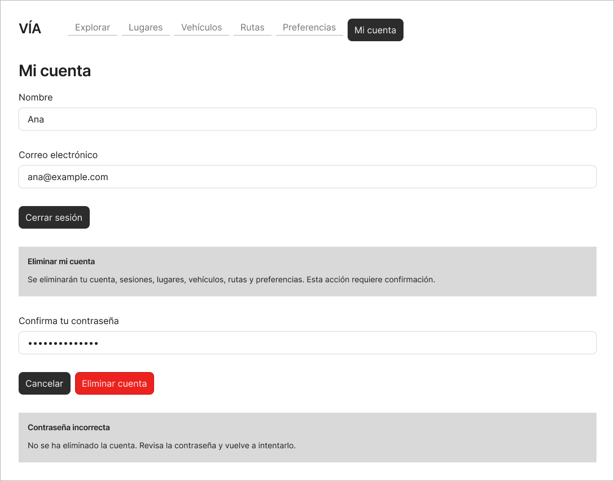
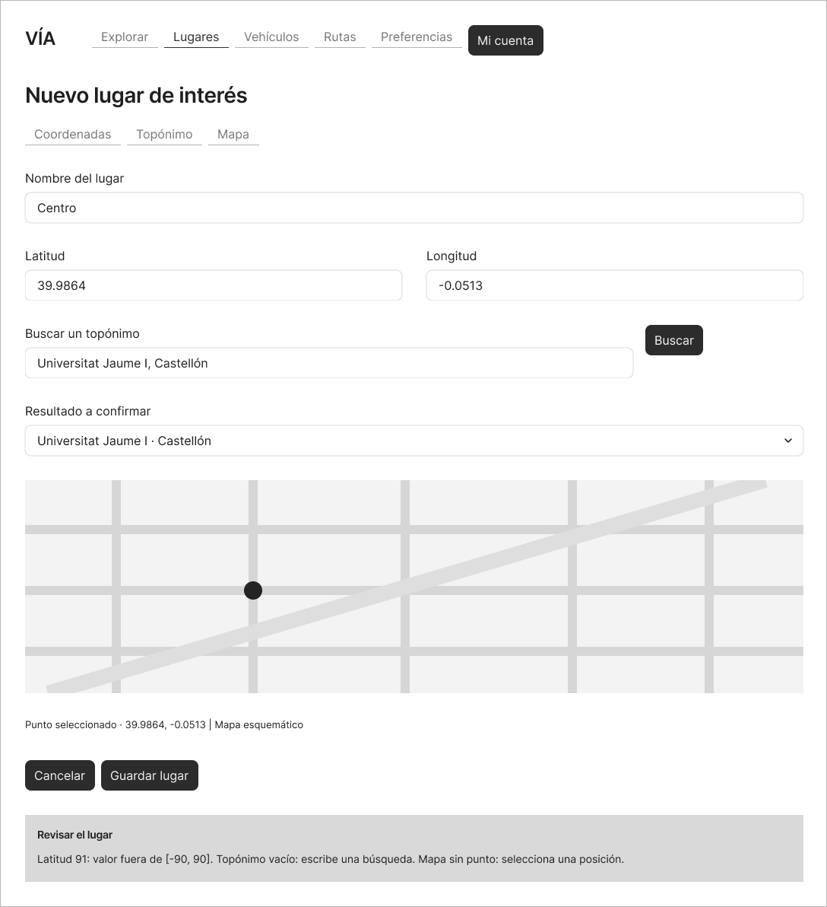
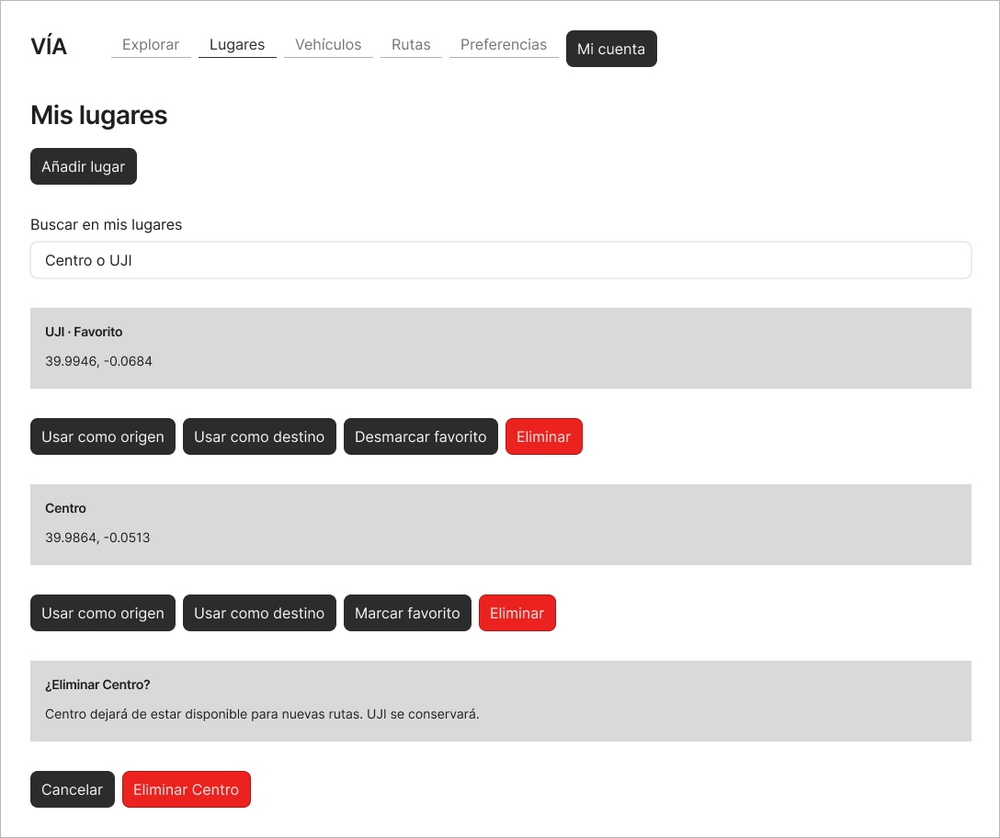
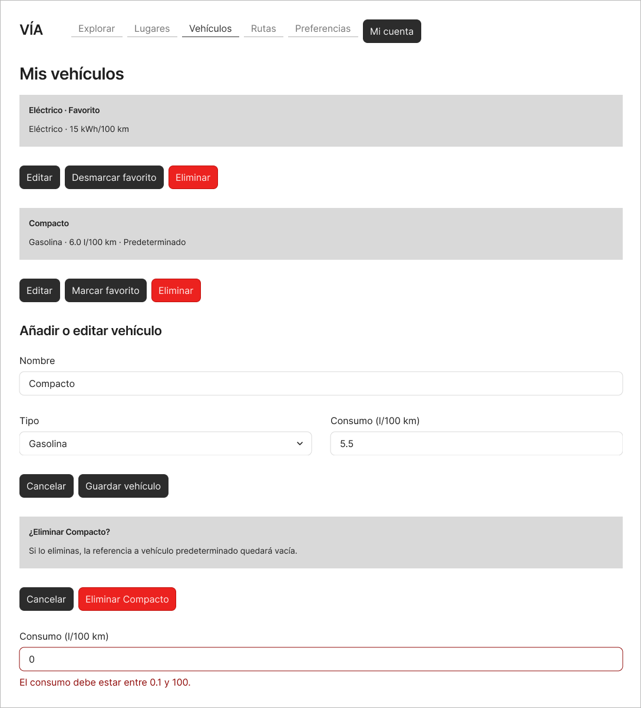
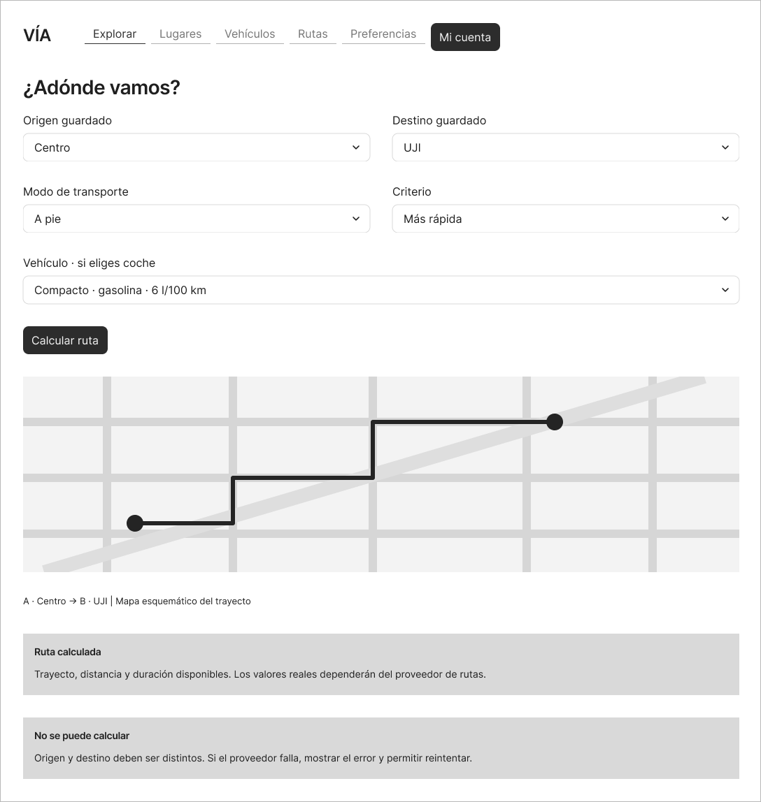
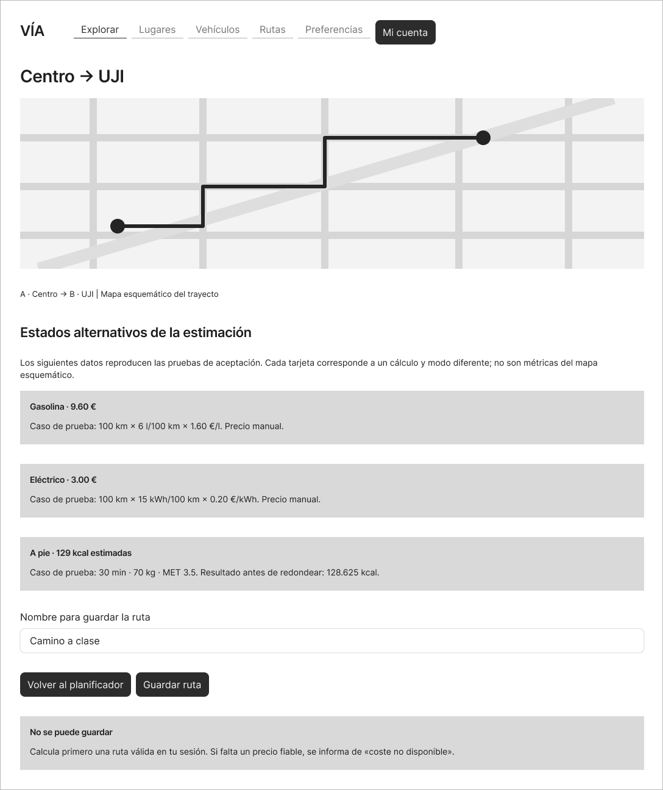
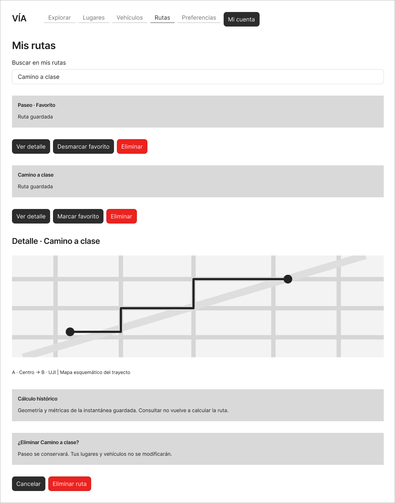
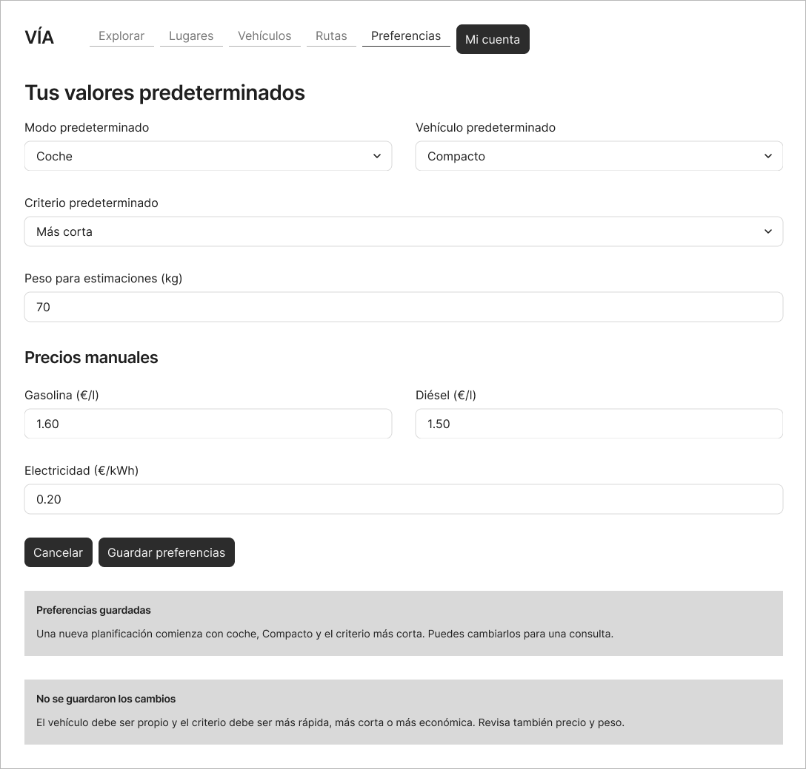
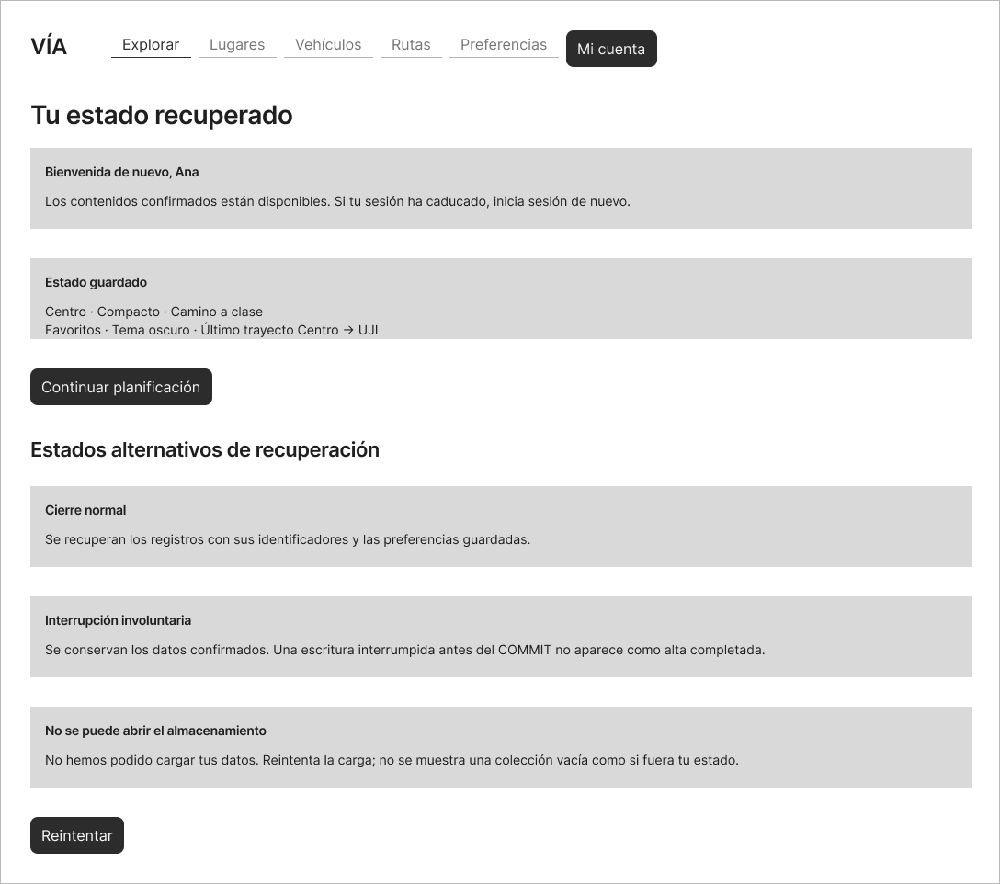

Diez propuestas de interfaz para las 26 historias. Las cifras ilustran cálculos y los estados alternativos no aparecen a la vez.
HU-01, HU-02

HU-03, HU-04

HU-05, HU-06, HU-09

HU-07, HU-08, HU-22

HU-10, HU-11, HU-12, HU-13, HU-22

HU-14, HU-18

HU-15, HU-16, HU-17, HU-19

HU-20, HU-21, HU-22

HU-23, HU-24, HU-15, HU-16, HU-17

HU-25, HU-26
